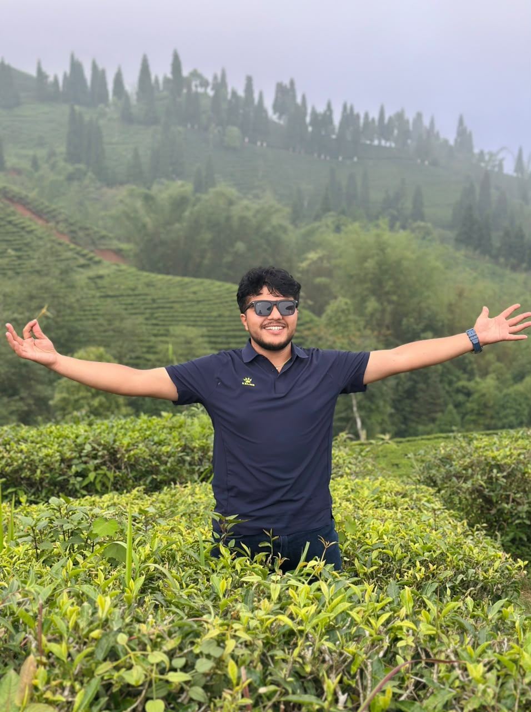

Transmission Line Foundation Supervision
Supervised civil construction for tower footings in steep mountain terrain. Conducted topographic leveling, soil stability checks, and site mitigation to secure foundation structures.
Understanding the Earth Beneath Us
I'm Sujan Paudyal, an Assistant Geologist with 2+ years of field experience. I’m passionate about geology, glaciology, and exploring the processes that shape the Himalayan landscape.

B.Sc. Geology (First Division) · Trichandra Multiple Campus, Tribhuvan University
Geology graduate specializing in field-based research, terrain analysis, and geological mapping.
I'm Sujan Paudyal, a geology graduate from Tri-Chandra Multiple Campus, Tribhuvan University, with practical experience conducting geological mapping, rock identification, and field investigations across complex Himalayan terrains.
My research and field experience center on terrain analysis, structural geology, and geotechnical surveys to better understand earth processes, natural hazard dynamics, and environmental stability.
I am highly motivated to pursue graduate research focusing on applied geology, geological risk assessment, and field studies. Feel free to explore my research work below or reach out to discuss academic opportunities.

Evaluating ground conditions to engineer resilient infrastructure.
Completed a 4-year curriculum covering Structural Geology, Petrology, Engineering Geology, Hydrogeology, and the Geology of Nepal. Practical training includes geological field mapping, rock mass identification, stratigraphy, and technical field report writing.
Completed technical coursework in Soil Mechanics, Foundation Engineering, Field Surveying, and Highway Engineering alongside foundational sciences. This applied background built a practical understanding of ground stability and soil behavior, directly preparing me for my B.Sc. studies in Engineering Geology.
Completed technical coursework focused on civil engineering fundamentals, basic surveying, and construction materials. This early vocational training provided my first practical exposure to land structures and material behavior, sparking my long-term academic interest in geotechnical engineering and geology.
Grateful for the academic mentors who shaped my path into geology research.


Almost three years turning geological insight into engineering decisions on active infrastructure sites.
Rastriya Prasaran Grid Company Limited (RPGCL) | Mewa-Changhe 132 kV Transmission Line Project, Taplejung
Madhyaphawa Khola Jalabidhyut Co-operative Ltd. · 6 Months
Suryabinayak & Phungling Municipalities · 3 Months Each
Applied field engineering, geotechnical assessments, and published geological research.
Supervised civil construction for tower footings in steep mountain terrain. Conducted topographic leveling, soil stability checks, and site mitigation to secure foundation structures.

Executed field geological mapping and site surveys along intake and headworks alignments. Evaluated slope stability and rock quality to guide preliminary civil layout planning.

Field-based study analyzing mountain flood hazards, terrain vulnerabilities, and disaster risk management along the transboundary corridor. Published in GeoWorld Students Journal.
Moments from site supervision, surveying, and foundation work across Taplejung's terrain.


Interested in collaboration, research opportunities, or just a conversation? Reach out anytime.
I'm open to graduate research opportunities, consulting, and project collaborations. Let's connect!
Download CVNepali · English (fluent) · Hindi (conversational)